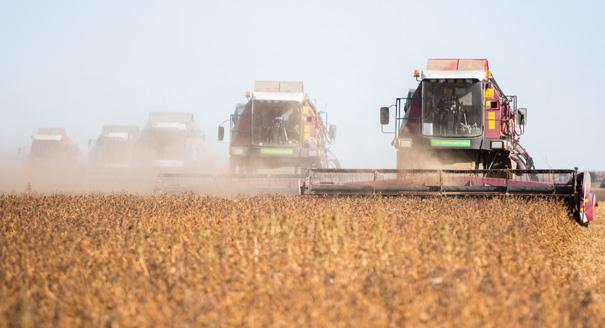
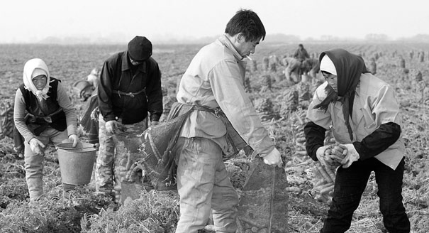

Без китайцев.Как пандемия меняет сельское хозяйство Дальнего Востока
Несмотря на многолетние разговоры о зависимости дальневосточной экономики от китайского капитала и рабочей силы, пандемия заставила найти все это в самой России
«Уедут китайцы – все зарастет», – популярный рефрен в дискуссиях, посвященных участию китайского капитала и рабочих в развитии российского сельского хозяйства – прежде всего на Дальнем Востоке.2020 год, казалось, должен был воплотить этот мрачный сценарий в жизнь: закрытые границы, карантинные меры для грузовых перевозок, а тут еще победа Байдена может прекратить торговое противостояние крупнейших в мире продавца и покупателя сои.Всё против дальневосточного сельского хозяйства, которое, как в советские времена, превращается в один из столпов региональной экономики.
Однако ближе к концу года оказалось, что скептики посрамлены, а оптимисты торжествуют.Созданные пандемией особые условия стали новой нормой в аграрном сотрудничестве России с Китаем, которое продолжает развиваться, пусть и не без побочных эффектов.
Значение китайских рабочих для сельского хозяйства Дальнего Востока снижалось уже давно.С середины 2010-х вслед за падением рубля, а следовательно, и доходов сезонных рабочих, нанимать китайских крестьян становилось все сложнее.
В том же направлении действовали и власти – особенно если им было кем заместить дефицит рабочей силы.В 2013 году в Амурской области при губернаторе Олеге Кожемяко обнулили квоты на трудовых мигрантов в сельском хозяйстве и лесной отрасли.В 2019 году Кожемяко пообещал сделать то же самое и в Приморье, где он стал губернатором.
Ожидалось, что присутствие китайцев в экономике региона будет постепенно снижаться еще несколько лет, но 2020-й ускорил развязку.Пандемия началась еще до сельхозсезона, так что введенные ограничения не дали китайским работникам приехать, даже если у них были необходимые документы.
Считаные единицы китайцев въехали окольными путями (например, через Южную Корею, пока она еще была открыта), но значимой роли их присутствие не сыграло.К примеру, китайская компания «Елена» в Пограничном районе Приморского края смогла нанять всего 12 китайцев, а компания «Хэфэн» (Кировский район) – и вовсе лишь троих, хотя раньше там работали десятки.
В результате весной все ждали худшего, потому что казалось, что на земле попросту некому будет работать.Но сейчас, в конце года, стало понятно, что опасения были напрасными.Отрасль устояла и без китайцев, а снижение посевов и урожая принципиально не сказалось на состоянии рынка.
Дефицит кадров удалось компенсировать местными ресурсами, а главной проблемой оказалось не отсутствие работников, а их недостаточная квалификация.Предпринимателям пришлось на ходу создавать курсы повышения квалификации для местных трактористов, которые раньше лишь со стороны смотрели, как иностранцы работают на новой технике.
В некоторых случаях приходилось приглашать механизаторов извне – но не из-за рубежа, а из европейских регионов России (например, Белгородской области).Так или иначе, 2020-й стал первым годом с конца 1980-х, когда на дальневосточных полях работали почти исключительно русские.
Безусловно, фермерам (хоть китайцам, хоть русским) проще иметь дело с китайскими рабочими.Им можно платить не постоянно, а только в сельхозсезон (с марта-апреля по октябрь-ноябрь).Не нужно вкладываться в социальную инфраструктуру – сезонным рабочим хватит бараков возле поля, а работать они готовы допоздна и без выходных.Однако, выбирая между закрытием бизнеса и наймом более требовательных (при этом чуть менее дорогих) местных рабочих, предприниматель волей-неволей вынужден поддерживать местный рынок труда.
Открытие границы откладывается на неопределенный срок, поэтому предприниматели уже сейчас строят планы на следующий сезон, ориентируясь только на российских рабочих.В то, что китайские сезонные рабочие вернутся после нескольких лет простоя, верится с трудом.
Во-первых, за это время удастся подготовить им замену.Во-вторых, перепрофилируются и сами китайские рабочие, и – что важнее – агентства, занимающиеся их наймом в приграничных деревнях.В-третьих, чем дальше, тем больше становится разница в оплате труда и условиях жизни между Китаем и российской деревней, что делает наем китайских трудовых мигрантов сложным и затратным мероприятием.
Вслед за сезонными рабочими из отрасли постепенно уходят и мелкие китайские предприятия, конкурентное преимущество которых как раз и заключалось в более эффективной работе с соотечественниками.Их место займут российские производители.Это могут быть как отдельные фермеры, так и крупные компании, представляющие и федеральный (например, компания «Примагро», дочка «Русагро», обрабатывающая 1/6 пашни Приморского края), и региональный (часто связанный с зарубежным капиталом, как компании «Легендагро» или «Лотте Агро Рус») бизнес.При нынешней конъюнктуре цен на зерно и бобовые желающих вложиться в дальневосточную землю хватает.
Экспорт российской сельхозпродукции действительно становится все более выгодным.Цены на зерновые и масличные растут куда быстрее, чем их себестоимость – особенно в конце этого года.
Взять, например, сою – основную культуру дальневосточного сельского хозяйства.В 2016 году средневзвешенная цена на нее в Амурской области составляла около 15 тысяч рублей за тонну, в прошлом, 2019 году крупные компании закупали ее у производителей по ценам от 25 до 28 тысяч рублей.Сою нового урожая 2020 года закупают уже по цене от 38 до 43 тысяч рублей за тонну.
Привлекательности российской продукции добавляет снижение курса рубля к доллару: в конце 2019 – начале 2020 года он был в районе 62–64 рублей, а когда зерно нового урожая вышло на рынок (конец октября), доллар уже стоил больше 77 рублей.
Наконец, главная причина высокой ликвидности дальневосточной сои – близость к китайскому рынку.С 2016 года Китай потребляет более 100 млн тонн сои ежегодно, а производит не более 20 млн тонн (около 18 млн тонн в 2019 г.).То есть импортировать приходится от 83% до 87% потребляемой в стране сои.
После начала торговой войны с США, главного поставщика сои (до 70 млн тонн ежегодно), Китай обратил взгляд на Россию.Пока наша страна не в состоянии удовлетворить потребности соседа (в 2018–2019 годах поставки находились на уровне 800–900 тысяч тонн в год), зато благоприятная конъюнктура позволяет продавать в Китай едва ли не всю производимую сою.
Короткое логистическое плечо между российским Дальним Востоком и Северо-Востоком Китая – это важный и необходимый фактор для начала зерновой торговли.Но в долгосрочной перспективе он становится бутылочным горлышком, которое не позволяет увеличить масштабы экспорта.
Во-первых, пропускная способность наземных погранпереходов низкая, а традиционная перевозка автотранспортом (23–26 тонн/авто) или в мешкотаре в крытых ж/д вагонах (65–67 тонн/вагон) не оптимальна для увеличения объемов.Во-вторых, основные заводы – переработчики сои в Китае расположены южнее (начиная с провинции Шаньдун), поэтому не только российская соя, ввозимая в Китай через северо-восток, но и соя, произведенная на самом северо-востоке, в итоге отправляется на юг.Обойти это бутылочное горлышко и перекупщиков, а также увеличить объемы можно только с помощью поставок морем.
Настоящей вехой в торговле дальневосточной соей стала первая в истории поставка партии почти 15 тысяч тонн бобов океанским грузовым судном «Чжунцзи-6», пришедшим в порт Наньтун (南通) из Владивостока 4 марта 2020 года.Сделка стала возможной благодаря тому, что в регион пришли крупный российский производитель – компания «Русагро» – и крупный китайский покупатель – корпорация КОФКО (中粮集团有限公司).
Решения о подобных сделках принимаются на самом высоком уровне – «План по углублению сотрудничества между Россией и Китаем в области сои» был подписан аж на полях ПМЭФ-2019.Протокол двусторонней торговли также постоянно совершенствуется.
Например, год назад было принято решение, что российскую сою можно экспортировать из любых, а не только конкретных регионов.Торговлю облегчило еще и то, что в отличие от пшеницы и кукурузы для импорта сои в Китай не нужно получать специальные квоты, этим может заниматься любая китайская внешнеторговая компания.
Собственно, это и происходило в течение 2010-х, что постепенно привело к рекордному увеличению посевных площадей под сою и опасному нарушению севооборота, когда из года в год на одной и той же земле выращивались одни лишь соевые бобы.
К счастью, в 2020 году ярко проявилась другая позитивная тенденция – второй соей для местного сельского хозяйства может стать кукуруза.Ее импорт в Китай в 2020 году достиг рекордных за последние годы показателей.Корпорация КОФКО ежегодно получает от китайских властей самые большие квоты на ввоз зерна и постепенно начинает применять их на российском направлении.С августа этого года организован вывоз крупных партий (около 5000 тонн кукурузы единовременно) морем из Владивостока.
В то же время поставки из России не составляют значимой доли в общем импорте кукурузы в Китай (6–7 млн тонн в год: в основном из США и Украины) и пока могут рассматриваться как тестовые.Однако в перспективе их рост до нескольких сотен тысяч тонн уже станет заметным и будет отвечать и интересам российского сельского хозяйства, и желанию Китая максимально диверсифицировать поставки зерна из разных стран.
Впрочем, у бума продаж в Китай дальневосточной сои и кукурузы есть и оборотная сторона.Пока под боком у фермера есть огромный и выгодный китайский рынок, почти весь урожай будет идти на экспорт, и всерьез говорить о развитии переработки в российском приграничье (за исключением единичных примеров в Амурской области, типа завода компании «Амурагроцентр») не приходится.
Дело дошло до того, что из-за неблагоприятной ценовой конъюнктуры (слишком востребованное и, как следствие, слишком дорогое сырье) законсервирован единственный завод по переработке сои – Уссурийский масложирокомбинат, принадлежащий группе компаний «Русагро», которая сама производит достаточное количество зернобобовых.
В целом ситуация похожа на ту, что сложилась в лесной отрасли, где предпринимателю выгоднее продать в Китай кругляк, чем заморачиваться затратной и не всегда эффективной переработкой.
При этом у переработчиков сои, располагающих производственными мощностями на западе страны, есть мощное лобби, призывающее власти ввести заградительные пошлины на экспорт сырья.Меру активно обсуждают, но однозначного ответа, хорошо это или плохо, нет.
Ограничение экспорта выгодно переработчикам, но оно же поставит под удар нынешнее бурное развитие растениеводства на Дальнем Востоке.Местному рынку не нужны те объемы, которые сейчас уходят в Китай, а везти на запад России при существующих железнодорожных тарифах далеко и дорого.
Сейчас себестоимость производства сои составляет от 13 до 22 тысяч рублей за тонну в зависимости от того, какую технику, удобрения и семенной фонд использует фермер.Реальным маркером для китайских скупщиков, работающих на Дальнем Востоке, является цена, по которой они могут сдать товар на склады китайского Госрезерва (中央储备) в Северо-Восточном Китае.В конце октября он закупал сою по 4400 юаней (около 44 тысяч рублей) за тонну.
Иными словами, резерв для падения цены, при которой выращивать сою на экспорт все еще будет выгодно, велик.Даже если в следующие годы на мировом рынке начнутся колебания, вызванные очередными мерами по поддержке иллинойсских фермеров и торговыми войнами, производство сои на Дальнем Востоке устоит, даже с учетом того, что в Бразилии и США издержки фермеров еще меньше за счет активного использования ГМО.
Теперь перспективное направление дальневосточного растениеводства заключается в том, чтобы с помощью современных агротехнологий повысить содержание протеина в сое и выйти на более привлекательную нишу рынка – продавать соевые бобы не для переработки в масло и комбикорм, где наша продукция конкурирует с более дешевой генномодифицированной, а для пищевых целей.Это позволит повысить добавленную стоимость, даже оставаясь исключительно источником сырья.
Другое направление – это выход из соевой золотой ловушки.Памятуя об аналогиях с лесной отраслью, дальновидным производителям стоит задуматься и о переработке, какой бы малопривлекательной в нынешних условиях она ни казалась.
Тут позитивные нотки тоже слышны: «Русагро» строит завод по производству комбикорма для нужд собственного свинокомплекса, существуют проекты переработки кукурузы (например, в плющеную кукурузу, которая используется как корм в животноводстве и птицеводстве, с прицелом на экспорт в Японию).Япония вообще выглядит привлекательным партнером – и чтобы снизить зависимость от китайского рынка, и как страна с более гибкими фитосанитарными нормами, чем те, которые в протекционистских целях существуют у Китая.Поставки уже идут.
С точки зрения диверсификации производства эксперименты с переводом земли под кукурузу уже оправдывают себя.Дорогостоящая, но весьма перспективная затея – это восстановление масштабной рисоводческой системы, построенной в советские годы, с прицелом на производство риса по передовым китайским технологиям.Климат и почвы в южном Приморье мало отличаются от условий в приграничных уездах провинций Хэйлунцзян (黑龙江) и Цзилинь (吉林), а местный рис считается одним из лучших в Китае.
Так что будущее за диверсификацией и повышением добавленной стоимости продукции.И то и другое требует крупных финансовых резервов и работы вдолгую.Несмотря на многолетние разговоры о зависимости дальневосточной экономики от китайского капитала и рабочей силы, все это нашлось в самой России.Правда, сделать это получилось благодаря встроенности в мировой рынок, доступности зарубежной техники и технологий, а также, будем честны, ценой закрепления статуса производителя сырья.
Публикация подготовлена в рамках проекта «Российско-китайская антанта», реализуемого при поддержке Министерства иностранных дел и по делам Содружества (Великобритания)
Фонд Карнеги за Международный Мир и Московский Центр Карнеги как организация не выступают с общей позицией по общественно-политическим вопросам.В публикации отражены личные взгляды авторов, которые не должны рассматриваться как точка зрения Фонда Карнеги за Международный Мир или Московского Центра Карнеги.
Posted On: 2020-12-09T21:00:00
Posted By: Иван Зуенко


Content Date: 2020-12-09
Download Date: 2021-06-20
Document ID: L0C04CWVY